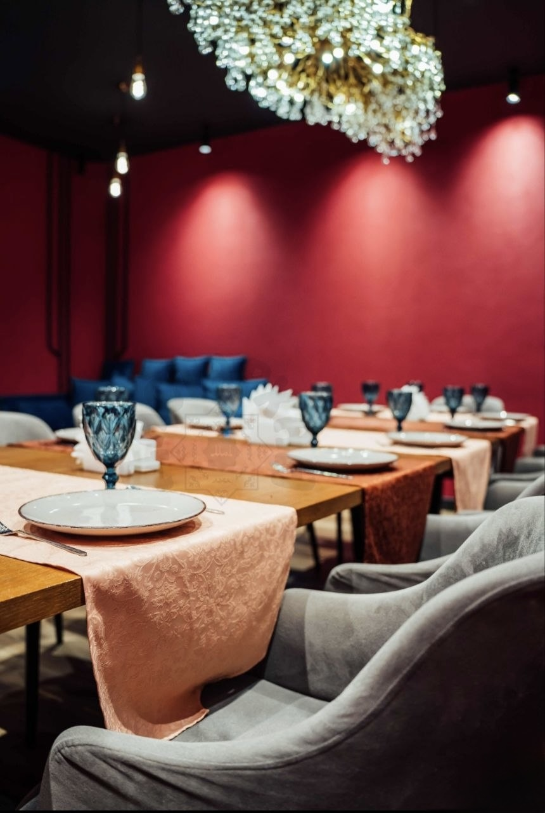
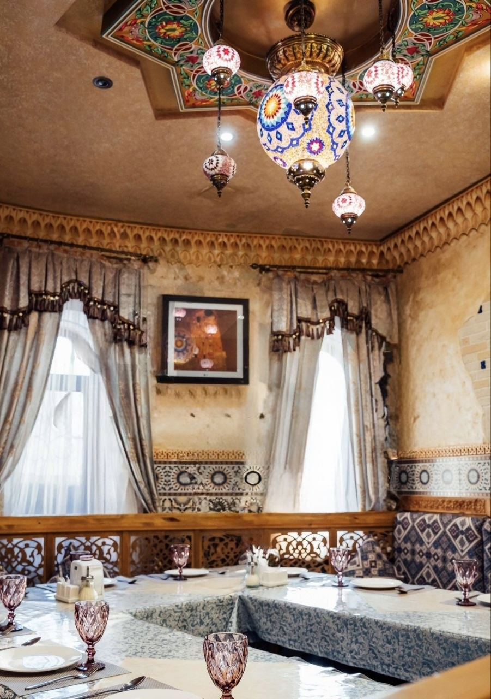

Welcome to Dastarkhan
Experience the true taste of the East!
Why choose Dastarkhan
Fresh Ingredients
Only fresh halal meat delivered daily from local farms and traditional spice blends.
Original Recipes
Every dish is prepared according to authentic traditions handed down through generations.
Fast Delivery
We deliver to all districts of Astana in 45–60 minutes with eco-friendly thermal containers.
Authentic Flavors and Traditions
Welcome to Dastarkhan, your ultimate destination for fresh, high-quality Eastern and Kazakh national cuisine in Astana. Whether you are craving our signature handmade lagman or a hearty, festive plov, our chefs prepare every dish with passion and top-tier halal ingredients according to original traditions.
Our History & Concept

How Dastarkhan Started in Astana
The story of Dastarkhan restaurant began in 2005 with a simple yet strict concept: serving authentic Eastern and Kazakh national cuisine using traditional recipes and fresh local meat. We started as a cozy oriental cafe, and thanks to authentic flavors, we quickly earned the trust of Astana residents.
We purchase fresh halal meat delivered daily from local farms and use traditional spice blends like Zira & Star Anise. Every dish, from handmade lagman to fragrant plov, is cooked in classic cast-iron kazans according to original traditions.
Our goal is to bring people together around a generous dastarkhan, where traditional food, warm hospitality and a comfortable atmosphere make every visit memorable.
Interesting Kitchen Fact
The dough for our handmade lagman noodles is pulled by hand and cooked in boiling water at approximately 100°C, helping create its distinctive texture.
Taste Philosophy & Our Journey
“Hospitality is the core of our tradition. If the dough for lagman was pulled this morning, those exact fresh noodles will be served in your bowl tonight. Real flavor tolerates no compromises.”
Key Stages of Development
- Opening of the first oriental cafe on Mukhtar Auezov Street.
- Expanding the main dining hall and opening a second venue on Dostyk Street.
- Introducing an updated menu featuring traditional Turkish and Uyghur specialties.
Opening Hours
We are open every day to serve you the best Eastern cuisine in town:
Monday – Sunday: 11:00 to 23:00
Our Locations in Astana
Find your nearest Dastarkhan branch for takeout or dine-in:
- Mukhtar Auezov Street, 33
- Dostyk Street, 1
Restaurant Features & Amenities
Cuisine: Eastern, Uyghur. Average bill: 4000 ₸
Menu Highlights: Shashlik, Chebureki, Pelmeni, Manti, Samsa, Lagman, Salads, Plov.
Services: Takeaway, Delivery, Banquet Hosting.
Amenities: Up to 120 seats, Private booths, Laptop friendly.
Payment Methods: Card payment, Cash, QR-code payment.
Accessibility: Ramp, Wheelchair accessible entrance.
Dining Gallery

